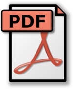

Qi-Hua Chen
AI for construction safety, smart infrastructure operations, and sustainable urban systems.
AI for construction safety, smart infrastructure operations, and sustainable urban systems.
I earned my Master's degree from Southwest Jiaotong University in 2024, where my research focused on smart construction safety management. Currently, I am a PhD student at the City University of Hong Kong, exploring innovative ways to integrate cutting-edge technologies into management and sustainable development.
My research interests include the following key areas:
Outside of academics, I enjoy an active lifestyle. My hobbies include playing table tennis and badminton, hiking through scenic trails, and occasionally running. Additionally, I run an academic self-media account where I share my learning experiences and insights with a broader audience. Feel free to connect and exchange ideas with me!
Vision-language models, report generation, safety behavior analysis, and personalized training.
Generative AI, reinforcement learning, knowledge graphs, and big data mining for decision support.
Sharing research outputs such as CPPED and Text2Label to support reproducible academic work.
Domain-adapted vision-language fusion for worker action recognition in construction videos. Automation in Construction.
Enhancing fire evacuation safety in metro stations with multi-agent reinforcement learning. Computers & Industrial Engineering.
CPPED was released as a construction personal protective equipment violation dataset.
Text2Label provides a Flask-based interface for binary text tagging and report annotation.
A civil aviation knowledge graph study explored structured knowledge modeling and reasoning.
Oral presentations were delivered at national BIM and civil engineering simulation conferences.

paper


I actively share research outputs and tools to support the community.
Friend link slots are reserved here. If you would like to exchange academic links, please contact me by email.